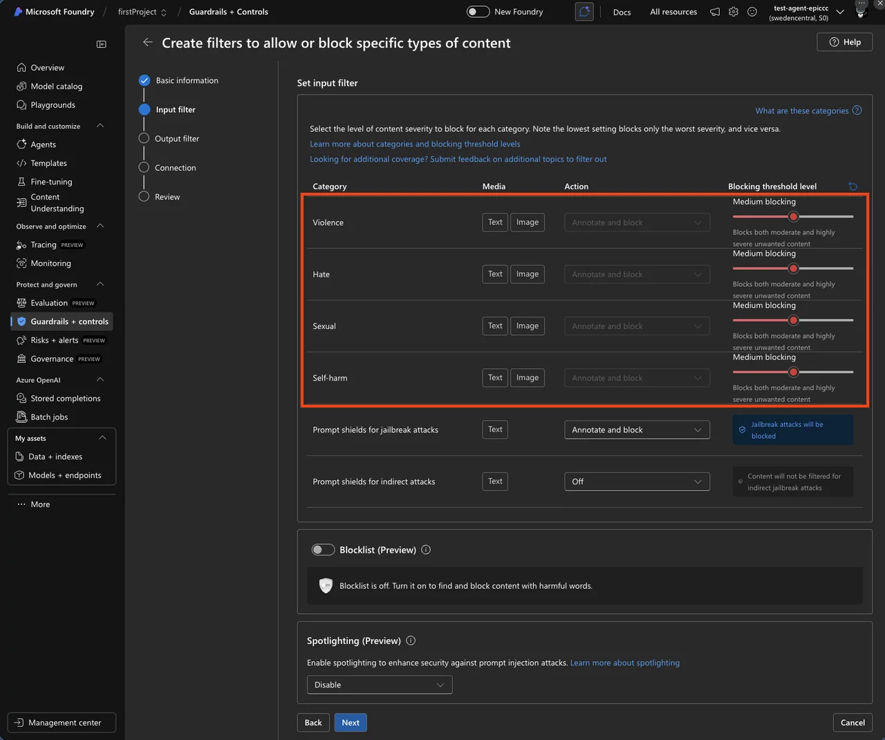
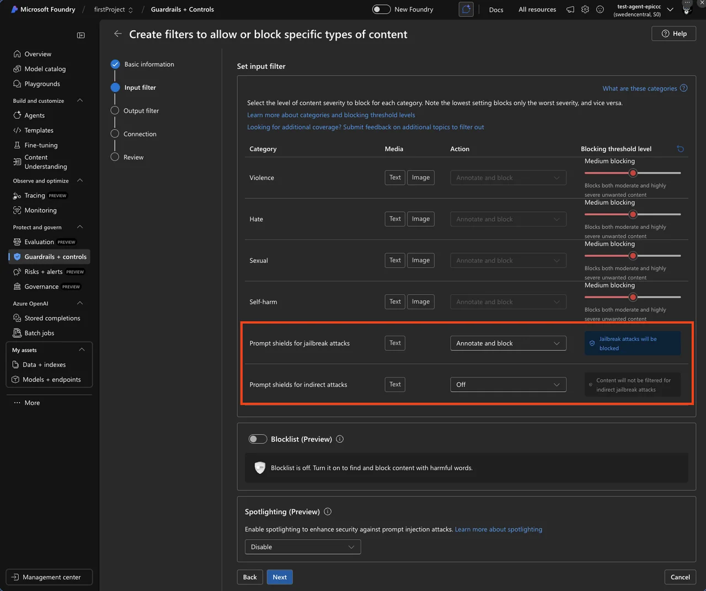
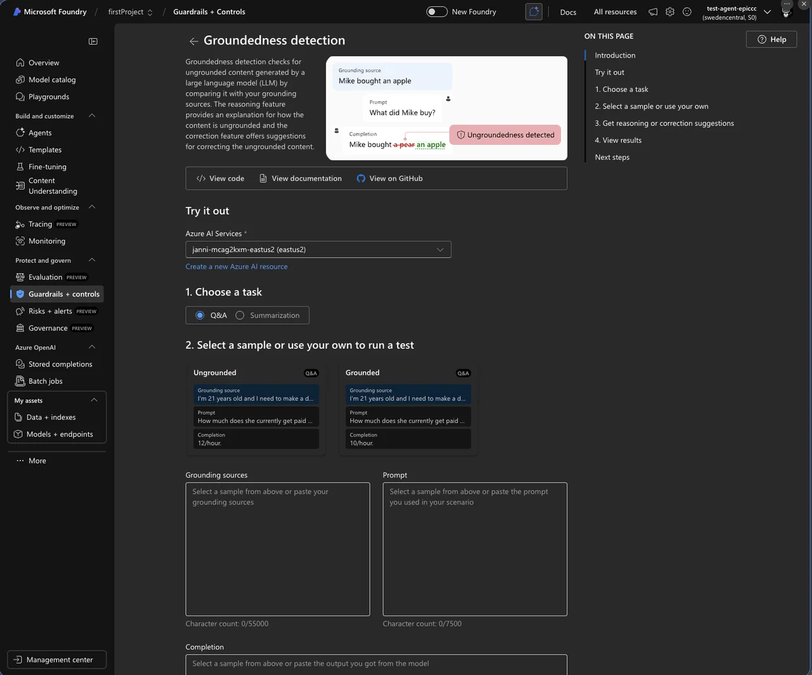
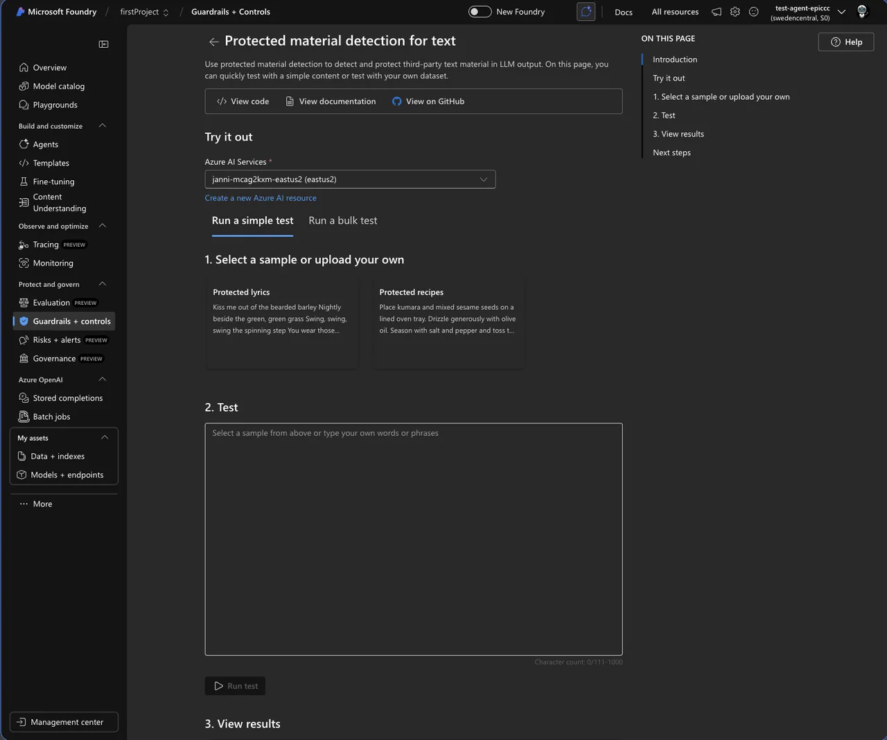
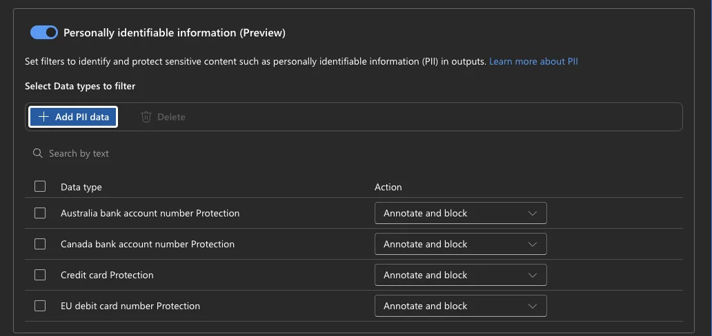
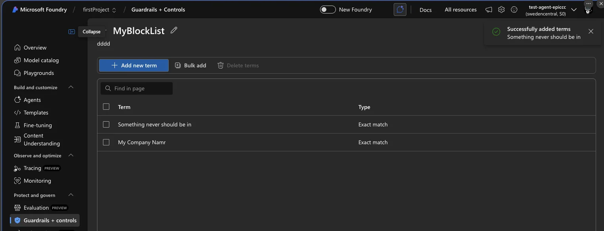
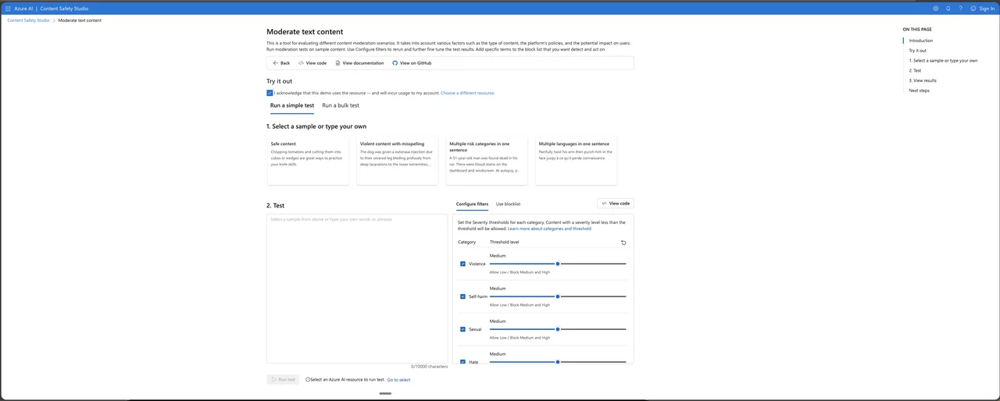
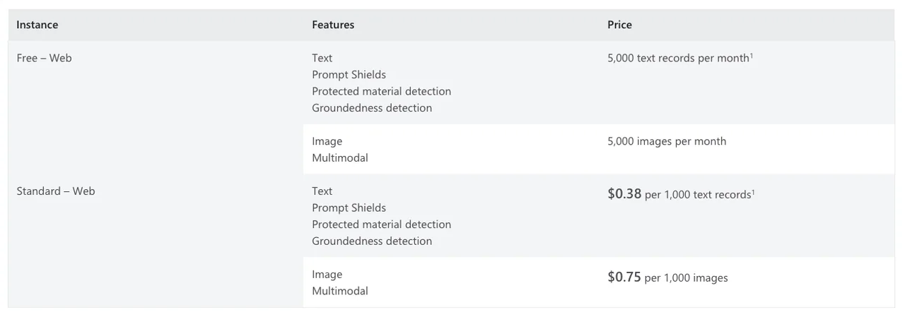

Azure AI Content Safety Guide: Filters and Best Practices
Azure AI Content Safety is Microsoftâs AI-powered service for detecting harmful content in both user-generated and AI-generated text and images. It runs as the built-in content filtering system for all Azure OpenAI and Foundry model deployments, screening both prompts and completions through an ensemble of classification models. The service is available as a standalone API and is deeply integrated into the Microsoft Foundry portal. It went through major expansion, adding prompt injection defense, hallucination detection, copyright protection, and PII filtering alongside its core harm-category classifiers.
In my opinion, Microsoft did a great job with this service. Over the past year, Azure AI Content Safety has matured from a simple harm classifier into a full guardrail platform, and this guide walks through what Azure AI Content Safety can do and how to configure it.
Quick answer: Azure AI Content Safety is Microsoftâs managed service for detecting harmful text and images and protecting generative-AI applications. In production I combine harm severity thresholds with Prompt Shields, groundedness, protected-material checks and application-level controls because no single filter covers every risk.
Last verified: July 22, 2026
The core Azure AI Content Safety filter: four harm categories with severity scoring
The backbone of Azure AI Content Safety is a neural multi-class classification system that evaluates content across four harm categories. Each category returns a severity score, and a single piece of text can trigger multiple categories simultaneously, which is why Azure AI Content Safety is built around an ensemble rather than a single model.
The four categories are:
- Hate and Fairness (
Hate): Attacks or discriminatory language targeting identity groups (race, ethnicity, gender, sexual orientation, religion, disability, etc.). Includes harassment and bullying. - Sexual (
Sexual): Content related to sexual acts, anatomical references, erotic content, pornography, exploitation, and grooming. - Violence (
Violence): Language depicting physical harm, weapons, terrorism, intimidation, stalking, and violent extremism. - Self-Harm (
SelfHarm): Content about self-injury, suicide, eating disorders, and related bullying or instructions.

How severity levels work
The system uses an internal 0â7 scale that gets trimmed to four actionable levels for filtering decisions:
| Severity | Score | What it means |
|---|---|---|
| Safe | 0 | No harmful material; not subject to filtering and not configurable |
| Low | 2 | Positive characterization, general references, fictional contexts, low-intensity mentions |
| Medium | 4 | Insults, bullying, intimidation, dehumanization, moderate graphic content |
| High | 6 | Hate propaganda, explicit harmful instructions, terrorism content, extreme graphic material |
The text model supports the full 0â7 range internally (mapping [0,1]â0, [2,3]â2, [4,5]â4, [6,7]â6). The image model only returns the trimmed 0/2/4/6 scale. The multimodal model supports both.
The default configuration filters at medium severity threshold â content scoring medium (4) or high (6) is blocked; low (2) and safe (0) pass through. This applies to both prompts and completions. For serverless image model deployments, the default is stricter at the low threshold.
Configuring thresholds
Customers can adjust severity thresholds freely among three levels (Low+Medium+High, Medium+High, High only). Turning filters off entirely or using âannotate onlyâ mode (returns scores without blocking) requires a formal approval process via the âAzure OpenAI Limited Access Review: Modified Content Filtersâ form.
Beyond harm categories: the advanced filter arsenal
Azure AI Content Safety has expanded well beyond the four core categories into a suite of specialized filters, each addressing a distinct threat vector. These advanced filters are what make Azure AI Content Safety suitable for production agentic systems and not just basic moderation.
Prompt Shields (GA) â defending against injection attacks
Prompt Shields is a unified API that detects adversarial prompt injection before content generation. This becomes especially relevant for agentic systems like Microsoft IQ, where the model may reason over context and trigger actions based on user input. It replaces the older âJailbreak risk detectionâ feature and returns a binary classification (attack detected or not).
Two shield types:
- Direct attacks (jailbreak detection) â Targets deliberate attempts to bypass system rules. Detects attempts to change system rules, embedded conversation mockups, role-play exploits, and encoding attacks (ciphers, character transformations). On by default.
- Indirect attacks (XPIA / Cross-Domain Prompt Injection) â Detects malicious instructions embedded in documents, emails, or web content that the LLM processes. Covers manipulated content, unauthorized access attempts, information gathering, fraud, malware distribution, and availability attacks. Off by default â requires document embedding and formatting in prompts.
Both can be configured to either âAnnotate onlyâ or âAnnotate and block.â Trained on English, Chinese, French, German, Spanish, Italian, Japanese, and Portuguese.

A newer sub-feature called Spotlighting (preview, announced Build 2025) tags input documents with special formatting to distinguish trusted from untrusted inputs, enhancing indirect attack protection.
Groundedness detection â fighting hallucinations
Groundedness detection in Azure AI Content Safety checks whether LLM text responses are grounded in user-provided source materials. It uses a custom language model to evaluate claims against source data. Key specs:
- Available only in streaming scenarios
- Supported regions: Central US, East US, France Central, Canada East
- English only
- Maximum grounding sources: 55,000 characters per API call
- Maximum text/query: 7,500 characters; minimum query: 3 words
- Correction feature (preview): Automatically rewrites ungrounded text, returning a
correctedTextfield aligned with sources - Default: Off â must be enabled explicitly

Protected material detection (GA for text; preview for code)
Protected Material for Text identifies and blocks known copyrighted content (song lyrics, articles, recipes, selected web content) in model completions. English only. Maximum inference input: 1K characters. Content owners can submit text for protection via a request form. On by default.
Protected Material for Code detects source code matching public GitHub repositories, powered by GitHub Copilot. When enabled in annotate mode, it displays citation URLs alongside detected code. The code scanner index is only current through April 6, 2023 â newer code wonât be detected. This feature may be required for Microsoftâs Customer Copyright Commitment coverage. On by default.

PII detection (available as built-in filter)
Detects personally identifiable information â names, addresses, phone numbers, email addresses, SSNs, driverâs license numbers, passport numbers â in model completions. Within Azure AI Content Safety this is added as a built-in content filter option. Default: Off.

Custom blocklists
Supports exact text matching for specific terms. Includes a built-in profanity blocklist. Multiple blocklists can be combined in a single filter configuration and applied to input filters, output filters, or both. No semantic matching and no image matching capability. Customer-supplied blocklists are stored by the service (an exception to the general no-storage policy).

Custom categories â two approaches
Custom Categories (Standard) API (preview): ML-based. Define a category, provide 50â5,000 positive samples (plus optional negatives, up to 10,000 total), train a model (can take several hours), then use analyzeCustomCategory API. Returns boolean. Text only, English only. Limit: 3 categories per user, 3 versions per category.
Custom Categories (Rapid) API (preview): LLM-based, no training needed. Create an âincidentâ object with a text description, upload text or image samples (up to 1,000 per incident, max 100 incidents per resource). Uses semantic text matching (embedding search + lightweight classifier) and image matching (object-tracking model + embedding search). Works on both text and images, all supported languages.
Task Adherence
The newest feature in Azure AI Content Safety identifies discrepancies between an LLMâs behavior and its assigned task, including misaligned tool invocations and inconsistencies between responses and user intent. It enables blocking misaligned actions or escalation to human reviewers.
How to configure content filters in Azure AI Foundry portal
The step-by-step configuration flow:
- Sign in to Microsoft Foundry at ai.azure.com
- Navigate to your project â Guardrails + controls â Content filters tab
- Select + Create content filter
- Basic Information: Enter a filter name and select the connection (Azure AI Services resource)
- Input filters page: Configure filters for user prompts â set severity thresholds for each of the four harm categories (Low, Medium, High), configure Prompt Shields (Annotate only or Block), enable/disable Protected Material detection
- Output filters page: Configure filters for model completions â same severity controls, plus streaming mode option, Groundedness detection, Protected Material (text and code), and PII detection
- Blocklist configuration: Enable blocklists on either input or output filters, select custom blocklists or the built-in profanity blocklist
- Connection page: Associate the filter with specific model deployments (can also be done later)
- Review and create
Azure AI Content Safety filters are created at the hub/resource level and can be associated with one or more deployments. Each deployment can only have one active filter configuration at a time.
Content Safety Studio
There is also the Azure AI Content Safety Studio where you can follow a similar flow to generate the code example.

Request-level override
Microsoft Foundry supports a x-policy-id request header to specify a custom content filter at the API call level, overriding the deployment-level configuration. Not available for image input (chat with images) scenarios.
Integration with Azure OpenAI models â API behavior
How filtering manifests in API responses
When a prompt is filtered (harmful input detected): Returns HTTP 400 error with error code content_filter and error param prompt.
When a completion is filtered (harmful output detected): The responseâs finish_reason is set to content_filter. In non-streaming mode, no content is returned. In streaming mode, content streams until the filtered segment is detected.
When the content filtering system is down: The request completes without filtering, and error information appears in the content_filter_results object.
Standard responses from Azure AI Content Safety include a content_filter_results object with per-category annotations showing severity scores.
Azure API Management integration
The llm-content-safety policy element (GA as of April 2025) enables content safety enforcement at the API gateway level:
<llm-content-safety backend-id="name" shield-prompt="true" enforce-on-completions="true"> <categories output-type="FourSeverityLevels"> <category name="Hate" threshold="4" /> <category name="Violence" threshold="4" /> </categories> <blocklists> <id>blocklist-identifier</id> </blocklists></llm-content-safety>Returns HTTP 403 when content safety detects malicious content. This enables centralized content safety enforcement across multiple AI endpoints.
Performance considerations
- Synchronous mode (default): Filters run sequentially â adds 100â300ms latency per request
- Asynchronous mode: Filters run in parallel while the LLM response streams, significantly reducing latency. Recommended for production streaming applications.
Enterprise best practices and real-world guidance
Severity threshold recommendations by scenario
The right Azure AI Content Safety configuration depends heavily on your audience. Customer-facing chatbots (B2C): Start with the default medium threshold. Enable Prompt Shields in block mode. Enable Protected Material and Groundedness Detection. Add custom blocklists for brand-specific terms.
Internal enterprise tools (B2B): Consider low threshold â only blocking the most severe content. Business content (engineering, medical, legal terminology) frequently triggers false positives at lower thresholds. Real-world practitioners at Pondhouse Data documented cases where engineering content about âdatabase killingâ was blocked for self-harm, and electrical engineering guidelines triggered self-harm filters.
Children/education platforms: Set thresholds at high â maximum restriction. Enable all safety features. Use custom blocklists aggressively.
Healthcare applications: Start at medium and calibrate. Medical terminology routinely triggers self-harm and violence filters. Use custom categories for domain-specific concerns. Implement human review for edge cases.
Key pitfalls to avoid
- Over-aggressive default filtering â Test with domain-specific data before production. Engineering, medical, and legal content triggers false positives at medium threshold.
- Ignoring latency impact â Synchronous filtering adds 100â300ms. Use async streaming mode in production.
- Skipping Prompt Shields â Prompt injection is OWASPâs #1 LLM threat. Even minimal-filtering configurations should keep Prompt Shields enabled (very low false-positive rate).
- Static âset and forgetâ configuration â Monitor block rates, category distributions, and false positives continuously. Iterate thresholds and blocklists regularly.
- No human review escalation â Automated moderation alone frustrates users when legitimate content is blocked. Build appeal mechanisms and human-in-the-loop review.
- Same filters for input and output â Configure input and output filters separately. Input filters should focus on prompt injection; output filters on harmful generation, groundedness, and copyright.
- Insufficient logging â Log all content safety events with full metadata for compliance audits and system improvement. Integrate with Azure Monitor and Microsoft Purview.
Data privacy and compliance
- No data storage: Input texts/images are not stored during detection (except customer blocklists)
- No training on user data: User inputs never used to train Content Safety models
- Regional data residency: All processing stays within the selected Azure region
Pricing and technical specs
- Pricing tiers: F0 (free) and S0 (standard) for the standalone service
- Rate limits: Default 1,000 requests per 10 seconds (model-dependent)
- Text moderation input limit: 10K characters per submission; default minimum 110 characters for LLM completion scanning
- Language support: Core harm categories trained on 8 languages, work in 100+ with varying quality. Protected material, groundedness, and custom categories (standard) are English only.
- SDKs: C# (NuGet), Python (PyPI), Java (Maven), JavaScript (npm)

Code example stand alone service
## Copyright (c) Microsoft. All rights reserved.# To learn more, please visit the documentation - Quickstart: Azure Content Safety: https://aka.ms/acsstudiodoc#import enumimport jsonimport requestsfrom typing import Unionclass MediaType(enum.Enum): Text = 1 Image = 2class Category(enum.Enum): Hate = 1 SelfHarm = 2 Sexual = 3 Violence = 4class Action(enum.Enum): Accept = 1 Reject = 2class DetectionError(Exception): def __init__(self, code: str, message: str) -> None: """ Exception raised when there is an error in detecting the content. Args: - code (str): The error code. - message (str): The error message. """ self.code = code self.message = message def __repr__(self) -> str: return f"DetectionError(code={self.code}, message={self.message})"class Decision(object): def __init__( self, suggested_action: Action, action_by_category: dict[Category, Action] ) -> None: """ Represents the decision made by the content moderation system. Args: - suggested_action (Action): The suggested action to take. - action_by_category (dict[Category, Action]): The action to take for each category. """ self.suggested_action = suggested_action self.action_by_category = action_by_categoryclass ContentSafety(object): def __init__(self, endpoint: str, subscription_key: str, api_version: str) -> None: """ Creates a new ContentSafety instance. Args: - endpoint (str): The endpoint URL for the Content Safety API. - subscription_key (str): The subscription key for the Content Safety API. - api_version (str): The version of the Content Safety API to use. """ self.endpoint = endpoint self.subscription_key = subscription_key self.api_version = api_version def build_url(self, media_type: MediaType) -> str: """ Builds the URL for the Content Safety API based on the media type. Args: - media_type (MediaType): The type of media to analyze. Returns: - str: The URL for the Content Safety API. """ if media_type == MediaType.Text: return f"{self.endpoint}/contentsafety/text:analyze?api-version={self.api_version}" elif media_type == MediaType.Image: return f"{self.endpoint}/contentsafety/image:analyze?api-version={self.api_version}" else: raise ValueError(f"Invalid Media Type {media_type}") def build_headers(self) -> dict[str, str]: """ Builds the headers for the Content Safety API request. Returns: - dict[str, str]: The headers for the Content Safety API request. """ return { "Ocp-Apim-Subscription-Key": self.subscription_key, "Content-Type": "application/json", } def build_request_body( self, media_type: MediaType, content: str, blocklists: list[str], ) -> dict: """ Builds the request body for the Content Safety API request. Args: - media_type (MediaType): The type of media to analyze. - content (str): The content to analyze. - blocklists (list[str]): The blocklists to use for text analysis. Returns: - dict: The request body for the Content Safety API request. """ if media_type == MediaType.Text: return { "text": content, "blocklistNames": blocklists, } elif media_type == MediaType.Image: return {"image": {"content": content}} else: raise ValueError(f"Invalid Media Type {media_type}") def detect( self, media_type: MediaType, content: str, blocklists: list[str] = [], ) -> dict: """ Detects unsafe content using the Content Safety API. Args: - media_type (MediaType): The type of media to analyze. - content (str): The content to analyze. - blocklists (list[str]): The blocklists to use for text analysis. Returns: - dict: The response from the Content Safety API. """ url = self.build_url(media_type) headers = self.build_headers() request_body = self.build_request_body(media_type, content, blocklists) payload = json.dumps(request_body) response = requests.post(url, headers=headers, data=payload) print(response.status_code) print(response.headers) print(response.text) res_content = response.json() if response.status_code != 200: raise DetectionError( res_content["error"]["code"], res_content["error"]["message"] ) return res_content def get_detect_result_by_category( self, category: Category, detect_result: dict ) -> Union[int, None]: """ Gets the detection result for the given category from the Content Safety API response. Args: - category (Category): The category to get the detection result for. - detect_result (dict): The Content Safety API response. Returns: - Union[int, None]: The detection result for the given category, or None if it is not found. """ category_res = detect_result.get("categoriesAnalysis", None) for res in category_res: if category.name == res.get("category", None): return res raise ValueError(f"Invalid Category {category}") def make_decision( self, detection_result: dict, reject_thresholds: dict[Category, int], ) -> Decision: """ Makes a decision based on the Content Safety API response and the specified reject thresholds. Users can customize their decision-making method. Args: - detection_result (dict): The Content Safety API response. - reject_thresholds (dict[Category, int]): The reject thresholds for each category. Returns: - Decision: The decision based on the Content Safety API response and the specified reject thresholds. """ action_result = {} final_action = Action.Accept for category, threshold in reject_thresholds.items(): if threshold not in (-1, 0, 2, 4, 6): raise ValueError("RejectThreshold can only be in (-1, 0, 2, 4, 6)") cate_detect_res = self.get_detect_result_by_category( category, detection_result ) if cate_detect_res is None or "severity" not in cate_detect_res: raise ValueError(f"Can not find detection result for {category}") severity = cate_detect_res["severity"] action = ( Action.Reject if threshold != -1 and severity >= threshold else Action.Accept ) action_result[category] = action if action.value > final_action.value: final_action = action if ( "blocklistsMatch" in detection_result and detection_result["blocklistsMatch"] and len(detection_result["blocklistsMatch"]) > 0 ): final_action = Action.Reject print(final_action.name) print(action_result) return Decision(final_action, action_result)if __name__ == "__main__": # Replace the placeholders with your own values endpoint = "<endpoint>" subscription_key = "<subscription_key>" api_version = "2024-09-01" # Initialize the ContentSafety object content_safety = ContentSafety(endpoint, subscription_key, api_version) # Set the media type and blocklists media_type = MediaType.Text blocklists = [] # Set the content to be tested content = "<test_content>" # Detect content safety detection_result = content_safety.detect(media_type, content, blocklists) # Set the reject thresholds for each category reject_thresholds = { Category.Hate: 4, Category.SelfHarm: 4, Category.Sexual: 4, Category.Violence: 4, } # Make a decision based on the detection result and reject thresholds decision_result = content_safety.make_decision(detection_result, reject_thresholds)
Final thoughts on Azure AI Content Safety
Azure AI Content Safety has grown into one of the most complete responsible-AI toolkits on any cloud, pairing the four classic harm classifiers with Prompt Shields, groundedness detection, protected-material checks, and PII filtering. For most teams the smartest path is to start with the medium default, watch your block rates, and tune from there.
If you are wiring this into agents, pair Azure AI Content Safety with a strong system prompt and review my guide on prompt engineering for the application side. For the full API reference and the latest feature rollouts, the official Microsoft Learn documentation for Azure AI Content Safety is the canonical source, and it is updated far more often than most blog posts.
Used together, these pieces let Azure AI Content Safety act as a reliable guardrail rather than a blunt filter.